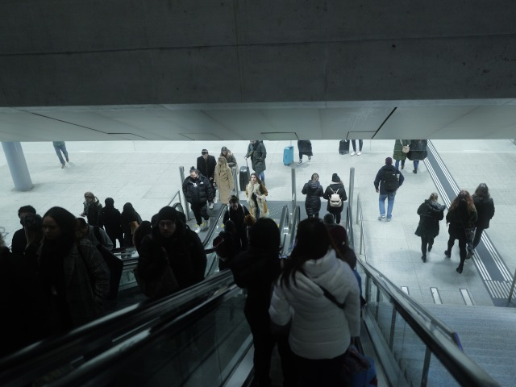

Published in leica q3Stefan DieraufMar 10, 2024More Leica Q3 snapsSome Q3 snaps before I wipe my sd card
Stefan DieraufMar 11, 2024 Olympus XZ-1Olympus XZ-1 snaps around the neighborhoodPicked up an Olympus XZ-1 a few weeks ago (for almost free!)…